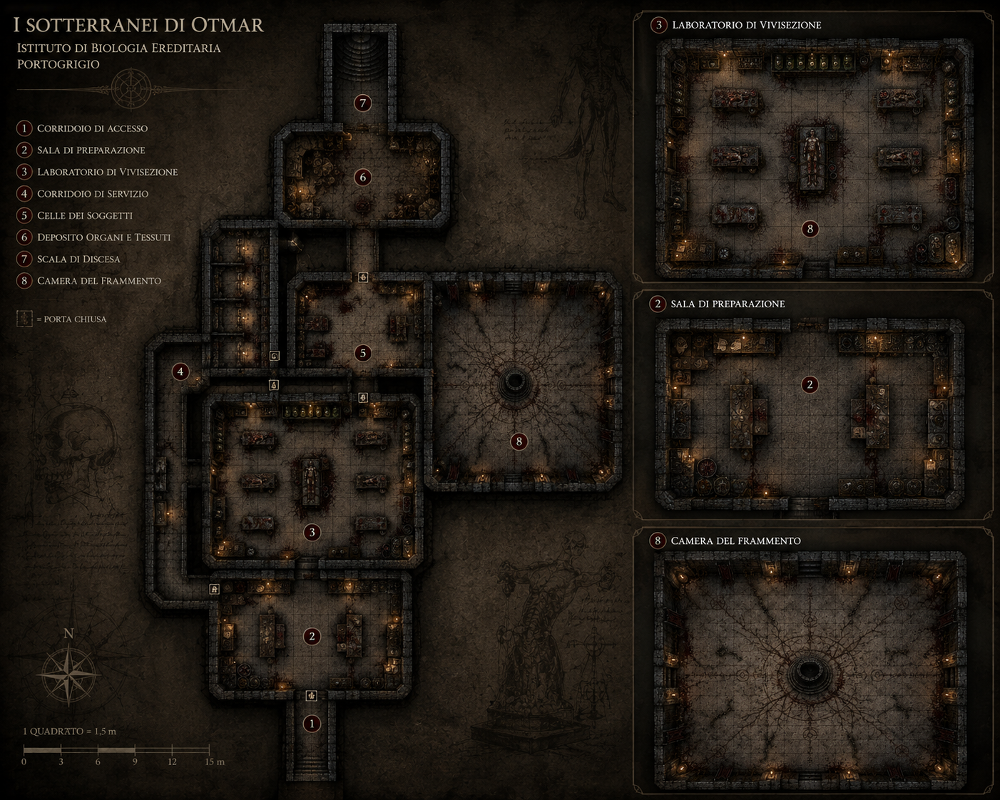
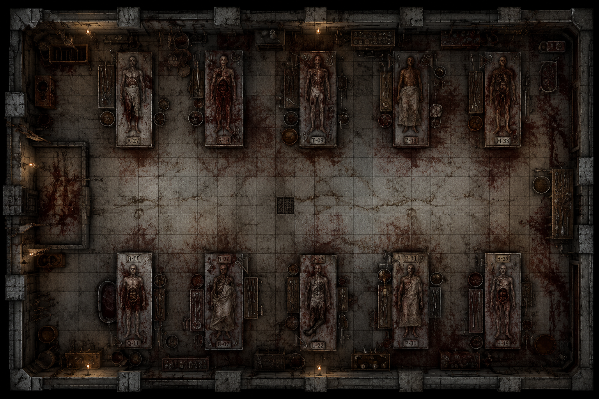
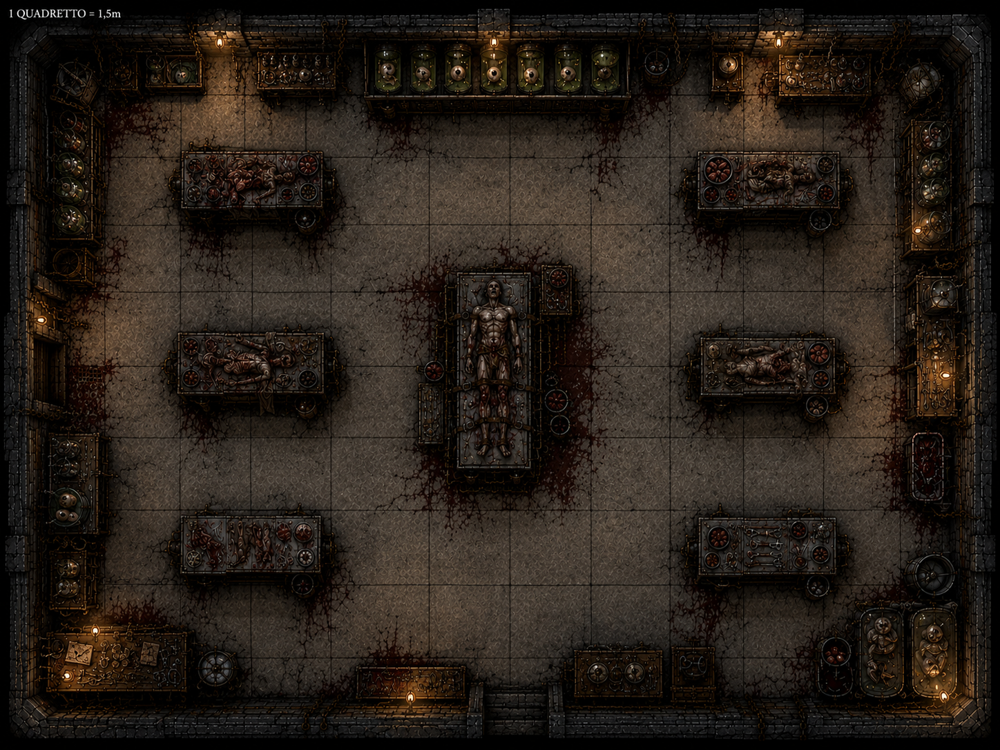
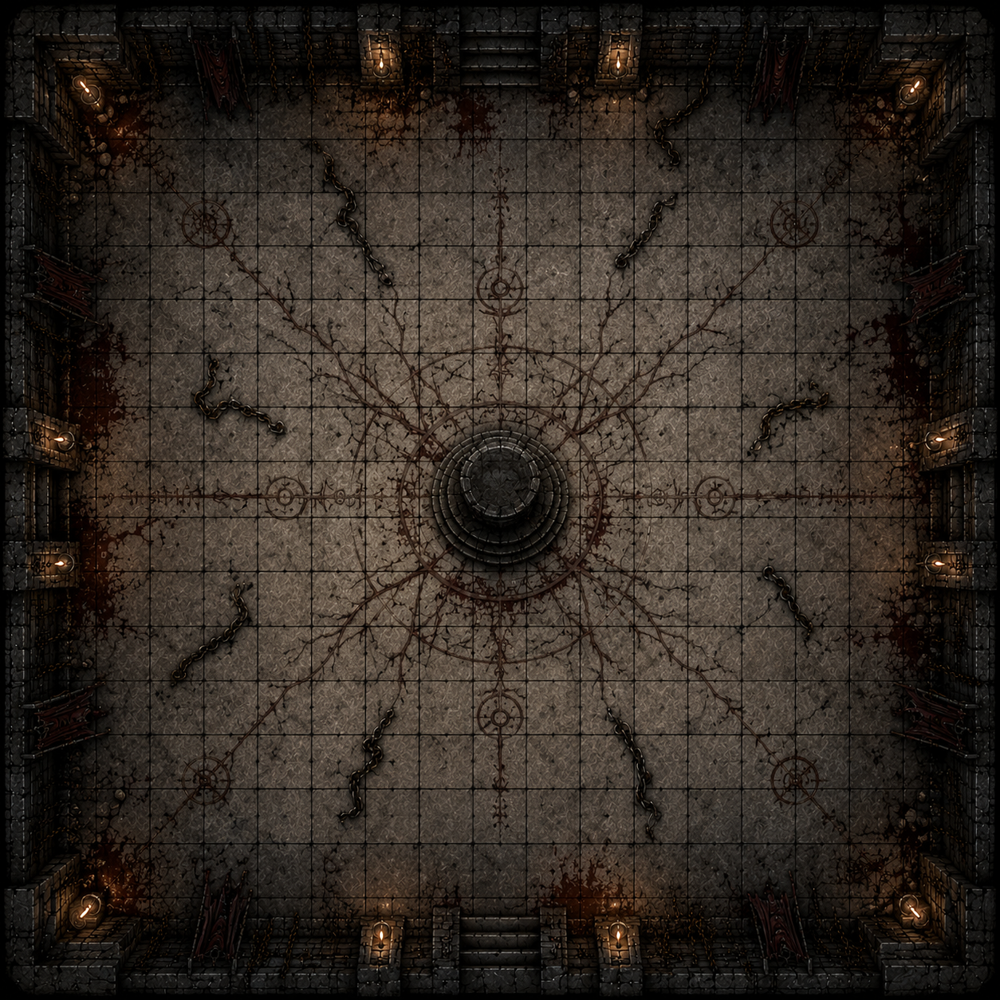

⚕
Laboratori Proibiti
Sale di preparazione, vivisezione e conservazione dei tessuti utilizzate per gli esperimenti sugli innesti necrotici.
L’istituzione medica più prestigiosa della costa occidentale di Thalor. Dietro le sue aule illuminate e le immense biblioteche, qualcosa continua ancora a respirare sotto la pietra.
L’Accademia di Medicina domina il distretto accademico di Portogrigio con alte finestre gotiche, cortili interni e lunghi corridoi illuminati da lampade a olio. Ogni anno studenti provenienti da tutto Thalor attraversano le sue porte per studiare anatomia, chirurgia e le arti della guarigione.
Per la città rappresenta progresso, conoscenza e prestigio. Per alcuni, invece, è soltanto una facciata.
Nei registri ufficiali il nome di Otmar Van Verschuer compare ancora accanto a decenni di ricerche mediche e studi sulle malattie ereditarie. Ma nei sotterranei dimenticati sotto l’istituto esistono tracce di qualcosa di diverso.
Porte murate. Sale anatomiche non segnate sulle planimetrie. Strumenti chirurgici lasciati arrugginire accanto a tavoli ancora macchiati di sangue secco. E simboli che nessun insegnante dell’Accademia osa riconoscere apertamente.
I documenti recuperati nei laboratori nascosti parlano di innesti necrotici, sostituzione dei tessuti vivi e di un concetto ricorrente chiamato soltanto: La Forma Finale.
Secondo alcuni membri dei Becchini della Pioggia, durante le notti di tempesta si possono ancora udire rumori provenire dalle profondità dell’istituto. Catene. Metallo trascinato sulla pietra. E qualcosa che sembra tentare lentamente di rialzarsi.

Sale di preparazione, vivisezione e conservazione dei tessuti utilizzate per gli esperimenti sugli innesti necrotici.
Una sala quasi vuota dominata da un grande spazio rituale centrale. Catene spezzate giacciono sparse sul pavimento mentre sottili incisioni attraversano la pietra come vene disseccate. L’ambiente trasmette una sensazione innaturale di silenzio, come se qualcosa fosse stato rimosso… o liberato.
Una vasta sala adibita agli esperimenti sui soggetti dell’Accademia. Lunghi tavoli operatori occupano la stanza, circondati da strumenti chirurgici, contenitori anatomici e resti di dissezioni mai completate. I corpi catalogati giacciono ancora sui letti metallici, marchiati con sigle e annotazioni lasciate dagli studiosi di Otmar.
Barattoli sigillati, campioni immersi in soluzioni sconosciute e registri ormai quasi illeggibili.

Una vasta sala adibita agli esperimenti sui soggetti dell’Accademia. Lunghi tavoli operatori occupano la stanza, circondati da strumenti chirurgici, contenitori anatomici e resti di dissezioni mai completate. I corpi catalogati giacciono ancora sui letti metallici, marchiati con sigle e annotazioni lasciate dagli studiosi di Otmar.

Il cuore chirurgico dei sotterranei. Tavoli operatori disposti con precisione quasi accademica occupano la sala, circondati da scaffali, campioni anatomici e strumenti metallici. Al centro, un corpo è ancora fissato al banco principale, come se l'ultima procedura fosse stata interrotta solo pochi istanti prima.

Una sala quasi vuota dominata da un grande spazio rituale centrale. Catene spezzate giacciono sparse sul pavimento mentre sottili incisioni attraversano la pietra come vene disseccate. L’ambiente trasmette una sensazione innaturale di silenzio, come se qualcosa fosse stato rimosso… o liberato.